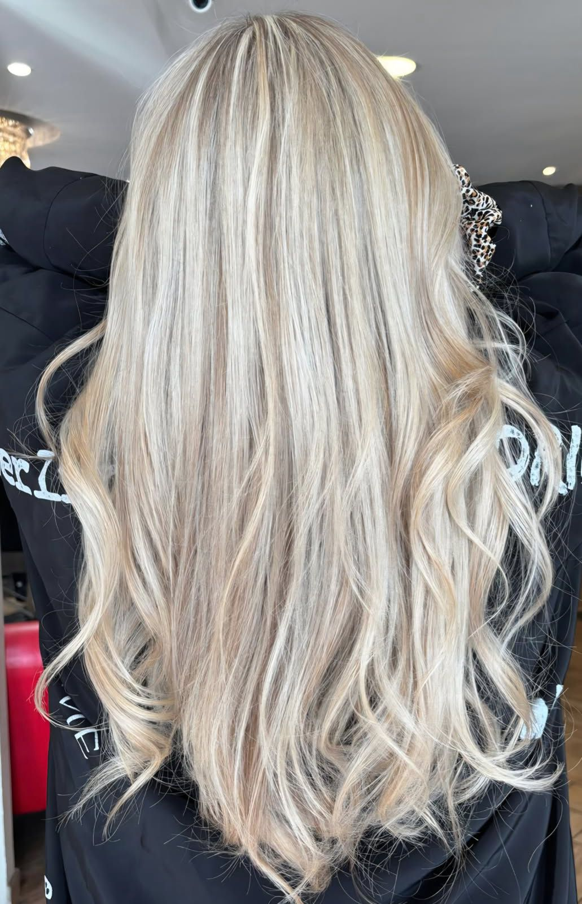
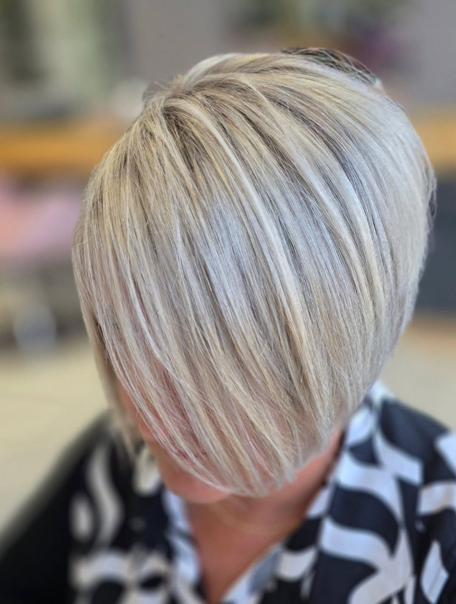
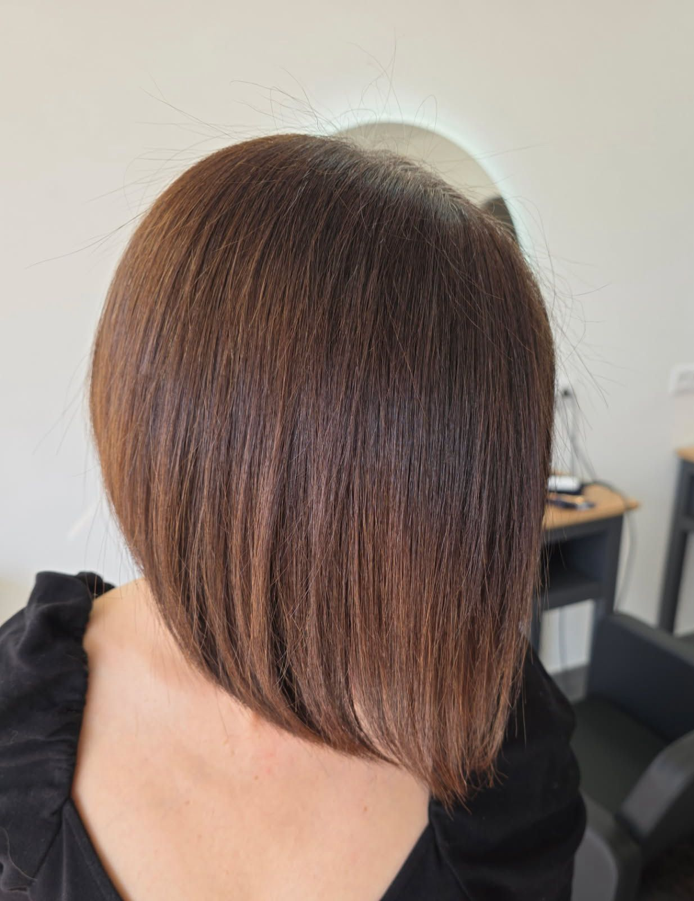
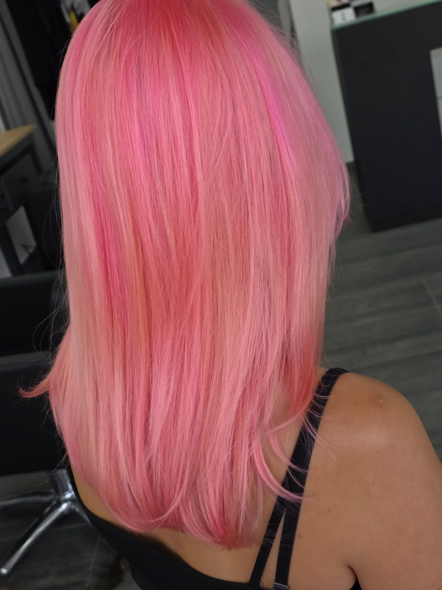
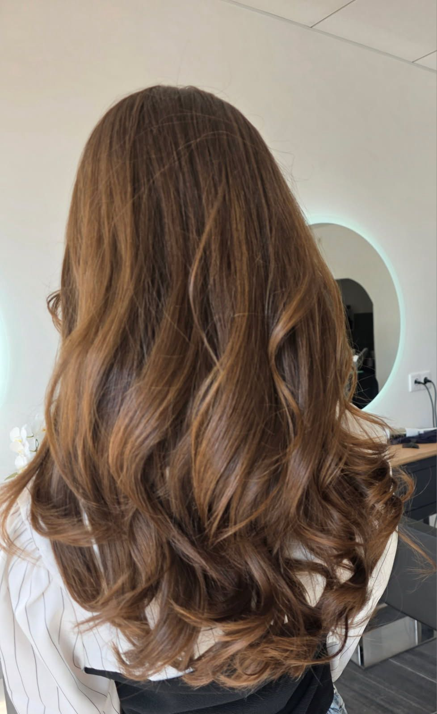

Galerie






Chaque coiffure est le reflet d'une histoire, d'une personnalité, d'un moment.
À l’Atelier de Coiffure, nous mettons en valeur la beauté de vos cheveux grâce à des colorations Redken personnalisées, des soins Olaplex professionnels et un savoir-faire reconnu.
Découvrez davantage de réalisations de notre salon de coiffure à Savigny-sur-Orge sur nos réseaux sociaux, et laissez-vous inspirer par notre univers.